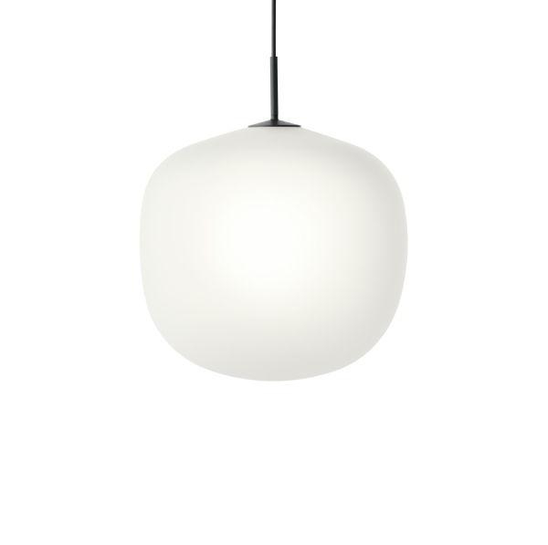

LIGHTING
TAF Studio의 디자이너 Mattias Ståhlbom은 "단순한 것을 디자인하는 것은 가장 어려운 일 중 하나입니다."라고 덧붙이며
"우리는 유리 모양의
단순한 램프를 만들고 싶었습니다. 최대한 섬세하게."
Ambit Pendant Lamp가 어떤 분위기와도 조화를 이룰 수 있는 독특한 모양으로 디자인된 이 디자인은 세련된 표면 표현을
위해 에칭 처리된 반투명 유리를 통해 전통적인 유리
펜던트에 현대적인 관점을 제공합니다.
AMBIT PENDANT LAMP
SKU I54OO
Opal White - Small Lamp
미묘하고 현대적인 감각의 AMBIT 펜던트 램프는 파우더 코팅된
상단 부분, 펜던트 튜브 및 일치하는 색상의 코드로 보완됩니다.
Lamp(s) included: No
Material: Aluminum Steel
Dimension: 450 x 170 x 370 mm ( L x W x H )
Product sheet: View
Opal White - Small Lamp
THE AMBIT
LAMP FAMILY
스칸디나비아 디자인의 가치를 구현한 Ambit 펜던트 램프는 시대를 초월하여 현대적입니다. 손으로 그린 수공 알루미늄으로 제작된 Ambit
펜던트 램프는 깨끗한 선과 흰색 인테리어가 특징으로 외부 그늘의 대비를 높이는 동시에 가정, 사무실 또는 상업 공간의 모든 방에서 방출되는 빛을 향상
시킵니다. 자체 또는 대칭 구성 및 활기찬 클러스터에 디자인을 사용합니다.
알루미늄 램프 갓 및 PVC 코드. 오래된 화로 전통으로 만들어진 램프 갓은 손으로 눌러 회전됩니다. 이후 램프 갓을 손으로 연마하고 칠합니다. 알루미늄
의 가단성은 매우 디테일하고 내구성 있는 Muuto 제품에 매우 적합하여 견고한 디자인에 가볍고 통풍이 잘 되는 느낌을 줍니다.
AMBIT PENDANT LAMP
clean lines and a white interior
“우리의 목표는 제품과 아키텍처가 어떻게 나타나고 기능하는지 미묘하지만 효과적인 변화를 통해 평범한 삶을 덜 평범하게 만드는 것입니다. 우리
프로젝트에서 반복되는 출발점은 일상적인 물건이 명백한 공통성으로 인해 흔하지 않게 될 수 있다는 것입니다.”
스칸디나비아 디자인:
"우리는 스칸디나비아 디자인이 디자인의 관련성을 유지하고 그것이 유명한 좋은 사회적 가치를 보존할 것이라고 생각합니다. 무엇보다도 나무의 사
용은 항상 우리 전통의 일부였으며 우리는 그것이 더 발전할 것이라고 믿습니다."
스칸디나비아 디자인의 가치를 구현하여, 시대를 초월한 현대적 디자인의 MUUTO’s Ambit Pendant Lamp
CEILING CAP fOR
WIRE SUSPENSION LAMPS
Ambit 램프 제품군은 시대를 초월한 현대적 제품입니다. 스톡홀름에
기반을 둔 듀오 TAF Studio가 디자인한 Ambit Lamp Family는 절제
된 현대적인 표현과 함께 전형적인 조명에 조용히 스칸디나비아의 관
점을 제공합니다. 모양의 단순함에서 출발한 Ambit Lamp 시리즈는
미묘한 디테일과 세련된 라인으로 정의됩니다.
TAF Studio는 Gabriella Lenke와 Mattias Ståhlbom이 설립한 스톡
홀름 기반의 디자인 및 건축 프랙티스로 세련된 디자인을 통해 국내 제
품에 새로운 생명을 불어넣기 위해 노력하고 있습니다.
전통적인 화로 방식을 사용하여 수작업으로 제작된 Ambit 램프 제품군
은 Ambit 펜던트 램프, Ambit 레일 램프 및 Ambit 벽 램프의 세 가지
유형으로 구성됩니다.
정밀하게 제작한 램프 -
알루미늄 전등갓과 PVC 코드. 오래된 화로 전통으로 만들어진 램프 갓
은 손으로 눌러 회전됩니다. 이후 램프 갓을 손으로 연마하고 칠합니다.
고품질을 유지하기 위해 지속적인 테스트가 개발 프로세스의 핵심입니다. 높은 수준의 강도와 안정성을 위해 당사 제품은 업계에서 존경받는 독립 기관의 인증을
받았습니다.
EN은 국내 및 비가정용 제품의 강도, 내구성 및 안전성을 측정하고 평가하는 유럽 표준입니다. 그 외에도 가장 까다로운 표준 중 하나인 북미 ANSI/BIFMA에 따라 다양한 가구를 테스트합니다. 함께
이러한
산업 표준은 당사의 설계가 안전하고 오래 지속되도록 제작되었음을 추가로 보증합니다.
예를 들어 Fiber Armchair Tube Base를 살펴보십시오. ANSI/BIFMA X5.4의 엄격한 요구 사항을 충족하기 위해 내구성 테스트 프로토콜에는 의자 시트에 57kg 상당의 무게를
100,000번 떨어뜨리고 33,4kg
의 압력을 의자 등받이에 120,000번 적용하는 프로토콜이 포함됩니다.
Product information
Product description
스칸디나비아 디자인의 가치를 구현한 Ambit 펜던트 램프는 시대를 초월하여 현대적입니다. 손으로 그린 수공 알루미늄으로 제작된 Ambit 펜던트 램프는 깨끗한 선과 흰색 인테리어가 특징으로 외부 그늘의 대비를 높이는 동시에 가정, 사무실 또는
상업 공간의 모든 방에서 방출되는 빛을 향상시킵니다. 자체 또는 대칭 구성 및 활기찬 클러스터에 디자인을 사용합니다.
Variant: Opal White - Small
SKU: 15400
Length: 23 cm
Height: 14,3 cm
Width: 23 cm
Diameter: 23 cm
Cord length: 350 cm
Colli: 1
Materials
알루미늄 램프 갓 및 PVC 코드. 오래된 화로 전통으로 만들어진 램프 갓은 손으로 눌
러 회전됩니다. 이후 램프 갓을 손으로 연마하고 칠합니다.
Painted Aluminium
알루미늄의 가단성은 매우 디테일하고 내구성 있는 Muuto 제품에 매우 적합하여
견고한 디자인에 가볍고 통풍이 잘 되는 느낌을 줍니다.
RELATED PRODUCTS
AMBIT RAIL LAMP
PENDANT LAMPS
399,000원
LINEAR TABLE LAMP
TABLE LAMPS
129,000원
E27 PENDANT LAMP
PENDANT LAMPS
169,000원
PULL FLOOR LAMP
FLOOR LAMPS
219,000원
POST WALL LAMP
WALL LAMPS
179,000원

RIME PENDANT LAMP
PENDANT LAMPS
419,000원
LINEAR PENDANT LAMP
PENDANT LAMPS
409,000원
TIP TABLE LAMP
TABLE LAMPS
139,000원